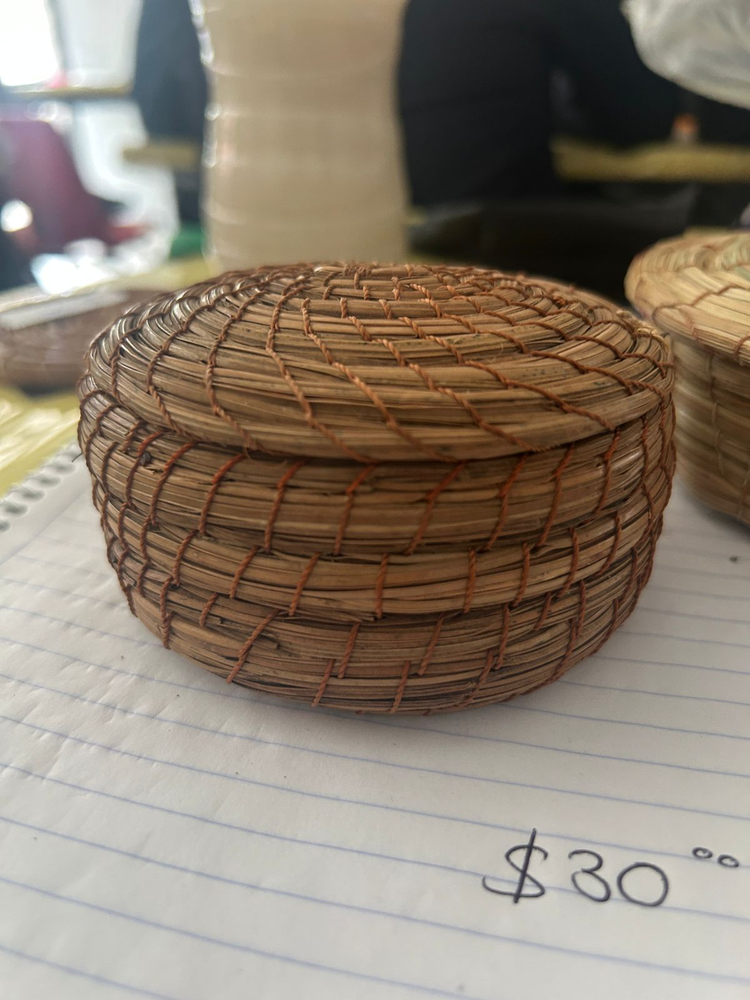
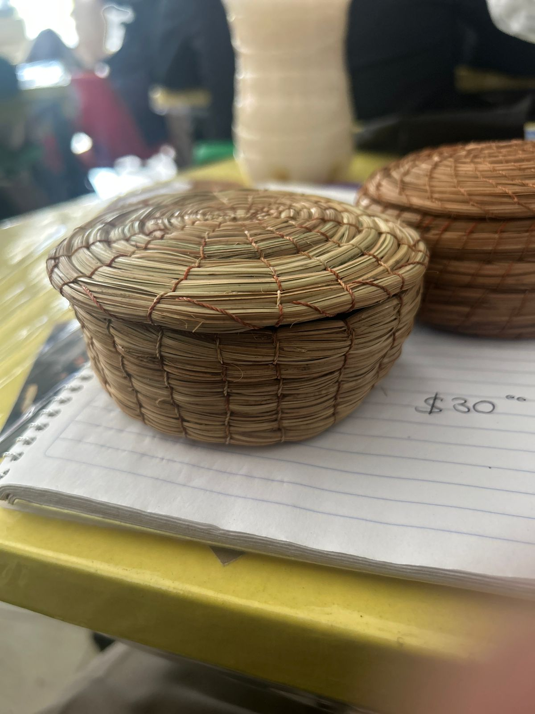
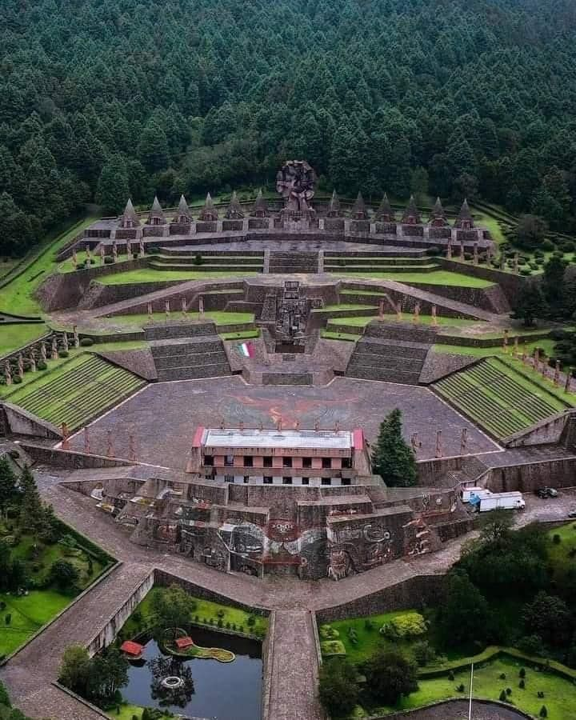
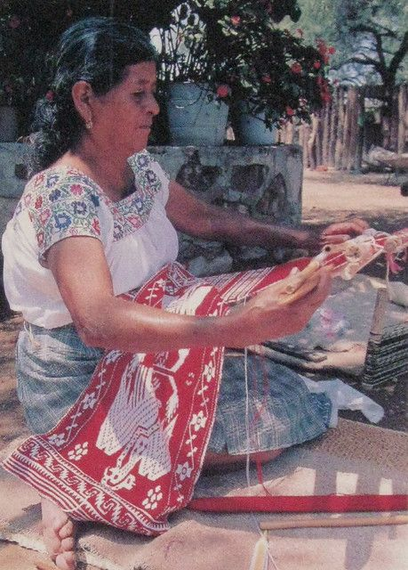

Proyecto Aula · Escuela · Comunidad
Arte que nace
del bosque
otomí
Artesanías de ocoxal elaboradas a mano en las comunidades otomíes del Estado de México — tradición viva que une generaciones, escuelas y territorios.
Ver Galería →
IMAGEN PRINCIPAL

DETALLE
◆ Colección
Galería de
Artesanías
Cinco piezas únicas elaboradas con hojas de ocote recolectadas en los bosques del Estado de México.

IMAGEN HISTORIA
Las hojas del ocote guardan la memoria de quienes aprendieron a tejer antes que nosotros.
◆ Sección 01
Historia del
Ocoxal
El término ocoxal designa las hojas secas caídas del árbol de ocote (Pinus montezumae), un pino nativo de los bosques de montaña del centro de México. Durante siglos, las comunidades otomíes del Estado de México han recolectado estas hojas para tejer objetos de uso cotidiano y ceremonial.
La práctica del tejido en ocoxal es anterior a la Colonia. Registros históricos y hallazgos arqueológicos confirman que este arte fue parte fundamental de la vida doméstica y ritual otomí mucho antes de la llegada de los españoles al Valle del Mezquital.
Hoy, el ocoxal representa una de las artesanías más singulares del Estado de México: completamente sustentable, elaborada con material que el bosque ofrece de forma natural, sin necesidad de talar ni dañar el árbol.
◆ Sección 02
Impacto
Escolar
El PAEC lleva la artesanía del ocoxal al aula como herramienta de aprendizaje, identidad y transformación comunitaria.
Educación Cultural
Los alumnos aprenden la historia y técnica del ocoxal dentro del aula, conectando el currículo escolar con la herencia cultural de su comunidad otomí.
Habilidades Manuales
El tejido en ocoxal desarrolla la motricidad fina, la paciencia y la creatividad en niños y jóvenes estudiantes de la región.
Identidad y Orgullo
Al conocer y practicar la artesanía ancestral, los estudiantes fortalecen su sentido de pertenencia al pueblo otomí y valoran su herencia.
Sostenibilidad
El proyecto enseña el valor de los recursos naturales del bosque, promoviendo una relación respetuosa y sustentable con el entorno.
Vínculo Escuela — Comunidad
El PAEC crea puentes entre las familias artesanas y las escuelas, invitando a maestros artesanos a compartir su saber directamente en el aula. Este intercambio fortalece tanto la transmisión cultural como el tejido social de la comunidad otomí del Estado de México.

IMAGEN IMPACTO
◆ Escríbenos
¿Tienes una
pregunta?
Si quieres saber más sobre el Proyecto Aula Escuela Comunidad, las artesanías de ocoxal o cómo participar, escríbenos.
- ◆Correoalanyahir@gmail.com
- ◆UbicaciónEstado de México, México
- ◆ProyectoAula · Escuela · Comunidad